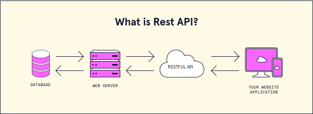

JavaScript: var, let and const
In this article, we will explained the difference between var, let and const in ES6.
var
- Scope of var is global or function level. Variable declared within a function has the function level scope otherwise global scope.
- Can be re-declared multiple times using var key word and same variable name.
- Value of variable declared using var can be updated anywhere within the scope. .
Sample Code:
- //val is declared in global scope. So, can be accessed from anywhere
- var val = 1;
- function printVal() {
- console.log(val); // 1
- val = 2;
- console.log(val); // 2
- //val2 declared within function. So, scope is limited to this function only
- var val2 = 3;
- console.log(val2); // 3
- }
- printVal();
- console.log(val); // 2;
- console.log(val2); // ReferenceError: val2 is not defined;
let
- Scope of let is block level. Here block is confined to the curly braces ({ and } like function, if or for blocks etc.).
- Variables declared within curly braces can not be accessed from outside the respective scopes.
- Can not be re-declared multiple times using let keyword and same variable name.
- Value of variables declared using let can also be updated anywhere within the scope
Sample Code:
- //val is declared in global scope. So, can be accessed from anywhere
- let val = 1;
- function printVal() {
- console.log(val); // 1
- val = 2;
- console.log(val); // 2
- //val2 declared within function. So, scope is limited to this function only
- let val2 = 3;
- console.log(val2); // 3
- }
- if (1 == 1) {
- console.log(val2); // 3
- let val3 = 4;
- console.log(val3); // 4
- }
- console.log(val3) //ReferenceError: val3 is not defined
- }
- printVal();
- console.log(val); // 2
- console.log(val2); // ReferenceError: val2 is not defined
const
- Scope of const is same as let, block level. Here block is confined to the curly braces ({ and }).
- Variables declared within curly braces can not be accessed from outside the respective scopes.
- Can not be re-declared multiple times using const keyword and same variable name.
- Value can not be updated once value is assigned to a const. But properties can be updated.
Sample Code:
- //val is declared in global scope. So, can be accessed from anywhere
- const val = 1;
- const obj = {
- x : 5,
- y : 10
- } // 2
- function printVal() {
- console.log(val); // 1;
- const val2 = 2;
- console.log(val2); // 2;
- }
- printVal();
- val = 3; //TypeError: Assignment to constant variable.
- const val = 3; //SyntaxError: Identifier 'val' has already been declared
- const obj = { x: 10, y: 15 }; //SyntaxError: Identifier 'obj' has already been declared
- obj = { x: 10, y: 15 }; //TypeError: Assignment to constant variable.
- obj.x = 10;
- obj.y = 10;
- console.log(obj); //{ x: 10, y: 10 }
Use Cases of Null & Undefined
In this article, we will explained different use cases of Null & Undefined.

Null
- Null is a special value that represents empty or non-existent value.
- Null is a primitive value and you can assign null to any variable.
- Null is not an object and it doesn't have any method.
- Null is a special value that represents empty or non-existent value.
- Null is a primitive value and you can assign null to any variable.
- Null is not an object and it doesn't have any method.
Sample Code:
- let val = null;
- console.log(val); // null
- console.log(typeof val); // object
- console.log(val.length); // TypeError
- console.log(val.toString()); // TypeError
Uses cases of Null
- Null is used to initialize a variable with an empty or non-existent value.
- let myVariable = null;
- Null is used to assign an empty or non-existent value to a variable.
- let myVariable = document.querySelector('mySelector');
- Null is used to compare with undefined to check if a variable has null value.
- if (myVariable === null) { // myVariable is null }
- Undefined means a variable has been declared but has not yet been assigned a value.
- Undefined is a primitive value and you can assign undefined to any variable.
- Undefined is not an object and it doesn't have any method.
- let val;
- console.log(val); // undefined
- console.log(typeof val); // undefined
- console.log(val.length); // TypeError
- console.log(val.toString()); // TypeError
- Undefined can be used in a function to represent that an argument was not provided
- function myFunction(myArgument) { if (myArgument === undefined) { throw new Error('Function called without argument'); } // ... }
- Undefined can be used to check if a variable has undefined value.
- if (myVariable === undefined) { // myVariable is undefined }
- Undefined can be used to check if a property exists in an object.
- if (myObject.myProperty === undefined) { // myObject.myProperty is undefined }
Undefined
Sample Code:
Uses cases of Undefined
REST API
In this article, we will explained the REST API.
REST
REST stands for Representational State Transfer. It is an architectural style that defines a set of rules in order to create Web Services. RESTful Web Services are Web Services that conform to the REST architectural style. RESTful Web Services are basically REST architecture based Web Services. In REST Architecture everything is a resource. RESTful web services are light weight, highly scalable and maintainable and are very commonly used to create APIs for web-based applications.
REST API
REST API is a set of functions that helps developer perform requests and receive responses via HTTP protocol such as GET and POST. REST API is a set of functions that helps developer perform requests and receive responses via HTTP protocol such as GET and POST.
REST API Methods
REST API defines a set of functions which developers can perform requests and receive responses via HTTP protocol such as GET and POST. REST API defines a set of functions which developers can perform requests and receive responses via HTTP protocol such as GET and POST.
GET
GET is used to retrieve data from a server at the specified resource. It is one of the most common HTTP methods.It should only retrieve data and should not have any other side effects on the server.
- GET /users
- GET /users/1
- GET /users/1/posts
POST
POST is used to send data to a server to create/update a resource.It can also be used to submit form data.
- POST /users
- POST /users/1/posts
PUT
PUT is used to send data to a server to create/update a resource. It replaces the entire resource with the new data provided.
- PUT /api/users/123
DELETE
DELETE is used to delete a resource from the server.
- DELETE /api/users/123
PATCH
PATCH is used to update partial resources. It is used when you want to update only specific fields of a resource without affecting the entire resource.
- PATCH /api/users/123
HEAD
HEAD is almost identical to GET, but without the response body. It is used to retrieve meta-information about a resource without actually fetching the resource itself. It can be used to check if a resource exists or if it has been modified.
- HEAD /api/users/123
OPTIONS
OPTIONS is used to describe the communication options for the target resource. It can be used to check the allowed methods on a resource.
- OPTIONS /api/users/123
CONNECT
CONNECT is used to establish a connection to the target resource.
- CONNECT /api/users/123
These HTTP methods correspond to different CRUD operations:
- =>GET - Read
- =>POST - Create
- =>PUT - Update
- =>DELETE - Delete